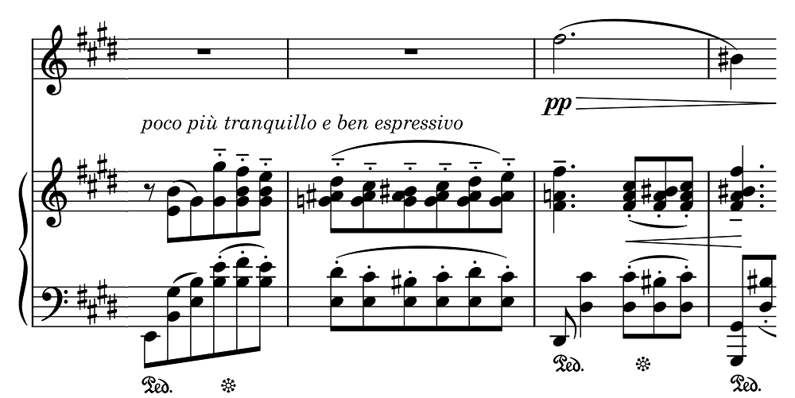
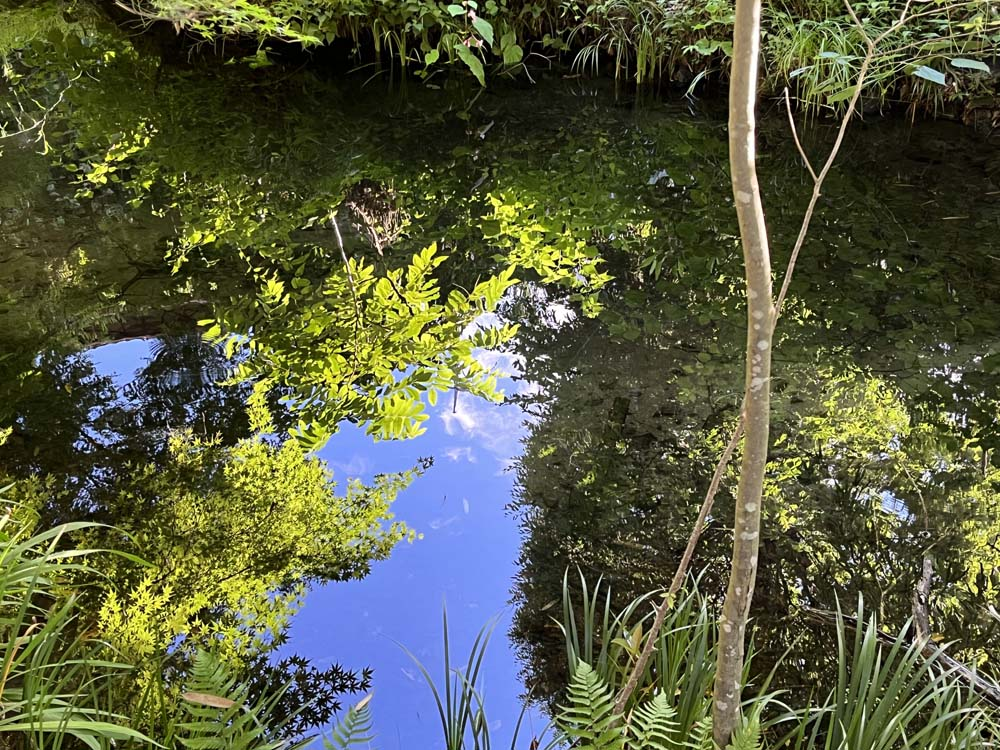

ビーチ: ヴァイオリンソナタ
前回はエイミー・ビーチのピアノ五重奏曲だったが、このヴァイオリンソナタも良い曲だ。全4楽章の堂々たる構成の中にロマンティックな楽想がふんだんに散りばめられている一方で、もちろんそれだけに終わらない第4楽章の白熱のアンサンブルなど技巧的にも聴き応え十分のソナタである。
録音は結構あるものの、今まで聴いた範囲ではどうも満足できるものがなかった。演奏や音質が妙にソフトだったり、録音が貧弱だったり、ちょっとこれでは曲の真価は見えてこないのではないかと思わざるを得ないようなものが多いのである。そんな中、これは曲の実像を果敢に掘り起こしているのではないかと一応納得できる録音をようやく見つけた。トーマス・イルンベルガーとバルバラ・モーザーによる、さまざまな女性作曲家のヴァイオリン曲を集めたアルバムの冒頭にこのビーチのヴァイオリンソナタが入っている。
Amy Beach: Violin Sonata
in A Minor, Op. 34
Thomas Albertus Irnberger (vn)
Barbara Moser (pf)
(2016)
第1楽章の第2主題は最初ヴァイオリンで素直に演奏され、それを受けてアノの両手の連続和音により繰り返される（譜例）。他の演奏ではここでリタルダンドしすぎたり、変にルバートしたりなのに対し、この演奏ではすっきりとした自然な流れで、そのうえ情感のこもった温かい音で歌っている。

他にも終楽章の盛り上げなど注目すべき点は多いが、きりがないのでいちいち挙げない。総じて音楽の運びが伸び伸びとしていて、出てくる音にも生命感があるのが大きな美点だと思う。第3楽章のヴァイオリンのゆっくりとした重音が連続するところで何箇所かブツ切れになるのはちょっと違和感もあるが、楽譜に長いレガートが付いているわけではないので、楽譜通りということなのだろう。
これ以外の収録曲もいずれも良いものだが、中でアマンダ・レントゲン=マイエルの『6つの小品』は、やや冗長なところもあるがヴァイオリン小品集などに入っていてもおかしくないような楽しめる曲集だ。アマンダは作曲家ユリウス・レントゲンの妻でヴァイオリニストだった。ユリウスの子も同じユリウスという名で、そのユリウスJr. はアメリカに滞在しクナイゼル四重奏団に5年ほど在籍していたことがある。このほか、ルイーゼ・アドルファ・ル・ボー（ドイツ）とかポーリーヌ・ガルシア＝ヴィアルド（フランス）とかドーラ・ペヤチェヴィチ（クロアチア）とか、よくこんな作品を探してくるものだ（それら作曲家のページがちゃんとある日本語版Wikipediaも大したものだが）。さらに定番のパラディス（ドゥシュキンの偽作といわれる）の『シシリエンヌ』も入っている。簡素な曲だがこういうアルバムの中で実にしみじみとその持ち味が沁みてくる。演奏も品があって好ましい。ピアノ伴奏は控え目ながら一部加工が施されている。

(Aug. 19, 2023)